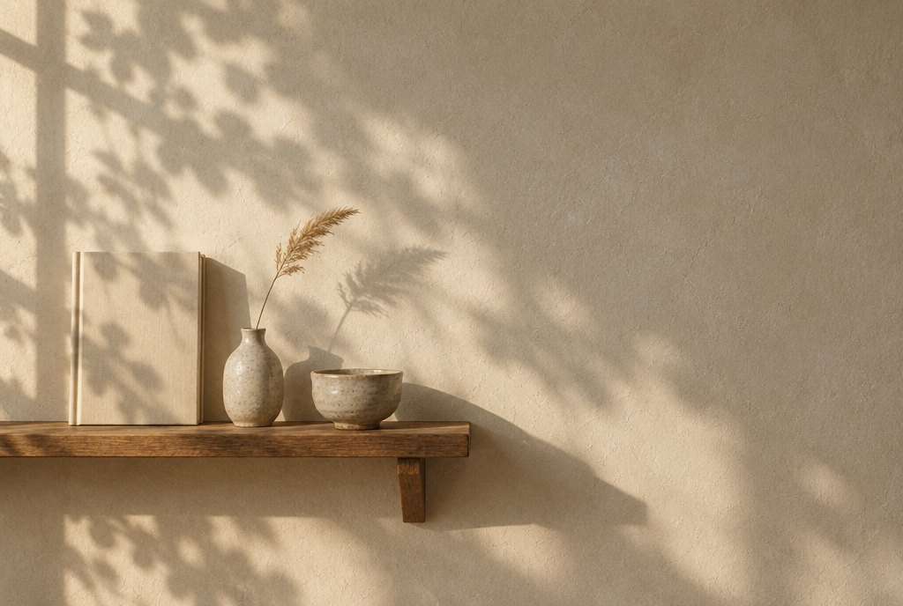

취향의 권리About The Right to Taste
찻잎 하나가 한 잔이 되기까지, 정답은 없습니다. 취향의 권리가 무엇을 믿고 어떻게 만들어졌는지, 네 가지로 적었습니다.

취향은 정해지는 것이 아니라,
완성되어 갑니다.
티백을 뜯을 때마다 매번 같은 맛이라 지겨웠던 적, 블렌딩 카페는 좋았지만 매번 시간 내서 찾아가긴 어려웠던 적, 선물로 차를 고르다가 결국 무난한 걸로 타협했던 적.
그런데 문득 궁금해졌습니다. 나는 어떤 차를 좋아하는 사람일까? 그 질문에 남이 대신 답해 주는 것이 아니라, 직접 고르고 섞고 우리면서 스스로 답해 가는 시간 — 우리는 그것을 취향의 권리라고 부릅니다.
전문가에게는 원칙이 있습니다. 당신에게는 취향의 권리가 있습니다.

열두 가지 원료,
4,000가지가 넘는 조합.
키트 하나에 원료 여섯 가지. Taste와 Depth 두 버전을 합치면 열두 가지가 되고, 그 조합은 4,000가지를 넘습니다. 그중 시음을 거쳐 특별히 맛있는 스물한 가지를 골라 「나의 취향 찾기」에 담았습니다.
어떤 날에는 꽃처럼 향긋하게,
어떤 날에는 커피처럼 깊게.
Taste는 레몬밤 · 히비스커스 · 페퍼민트 · 유자 · 장미 · 캐모마일. 향과 색, 감각으로 즐기는 화사한 허브 블렌딩입니다. 새로운 향을 탐색하는 시간을 좋아하는 분에게.
Depth는 둥굴레 · 찰수수 · 단팥 · 현미 · 민들레 뿌리 · 보리. 구수함과 로스팅의 깊이, 커피처럼 즐기는 곡물 블렌딩입니다. 커피를 마시던 시간에 새로운 한 잔을 찾는 분에게.
같은 재료도 비율이 달라지면 전혀 다른 한 잔이 됩니다. 어느 쪽이든, 왼쪽은 캐모마일 두 스푼, 오른쪽은 민들레 뿌리 두 스푼 — 거기서부터 당신의 비율이 시작됩니다.

오래된 나무처럼,
시간을 담는 그릇.
상자는 아이보리 미장, 노트 표지는 고재(古材)의 결을 따랐습니다. 새것의 반짝임보다 낡음 속의 정겨움 — 시간과 기억과 취향을 담는 그릇이기를 바랐기 때문입니다.
뚜껑을 열면 왼쪽 칸에 띠지를 두른 아코디언북, 오른쪽 칸에 블렌딩 노트. 아코디언북을 병풍처럼 펼치면 빈 티백과 원료 파우치, 풍경 엽서가 번갈아 이어지고, 노트에는 비율과 그날의 감상을 적습니다. 차를 기록하는 것이 아니라, 나의 취향을 기록합니다.
상자를 직접 열어 보려면 → 3D로 보기

취향의 권리는 두 전문가의 원칙 위에서 당신의 취향을 완성해 갑니다.
그리고 그다음 레시피는, 당신의 것입니다.